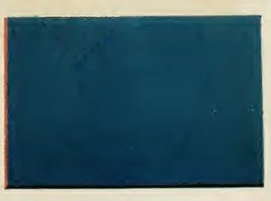
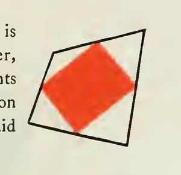
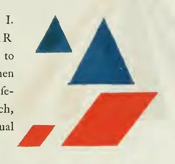
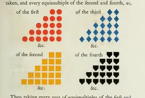

Content of type 'definitions'

Book II Definitions (I–II)
Definition I (p. 51): Every right-angled parallelogram () is said to be contained (×) by any two of the straight lines (, ) which contain one of the right angles.
![Book III Definitions polychrome woodblock diagrams: tangent circle, internal/external touching circles, and angle in a segment (Leaf 105, p. [71]).](../coloured_euclid/book-iii/definitions/0105.g1_300w_ff088b45.webp)
Book III Definitions (I–X)
Definition I: Equal circles are those of which the diameters are equal, or from the centres of which the straight lines to the circumferences are equal.

Book IV Definitions (I–VII)
Definitions I–II (p. 123): A rectilineal figure is inscribed in another when each angular point of the inscribed figure lies on a side of the other; and conversely circumscribed about it.

Book VI Definitions (I–IV)
Definition I: Similar rectilineal figures are those which have their several angles equal, each to each, and the sides about the equal angles proportionals (∷).
Book V Definitions I–IV (Part, Multiple & Ratio)
I. A less magnitude is said to be an aliquot part or submultiple of a greater magnitude, when the less measures the greater; that is, when the less is contained a certain number of times exactly in the greater.
Book V Axioms (I–III, Simson Numbering)
I. Equimultiples or equisubmultiples of the same, or of equal magnitudes, are equal to one another.

Book V Definition V — Criterion of Same Ratio
Four magnitudes (, , , ) are said to be proportionals, or in the same ratio, when any equimultiples whatsoever be taken of the first and third, and any equimultiples whatsoever of the second and fourth: if the multiple of the first be greater than (⊏), equal to (=), or less than (⊐) the multiple of the second, then the multiple of the third is also greater than, equal to, or less than that of the fourth ([V.def.5]).
Book V Definition VII — Criterion of Greater Ratio
When of the equimultiples of four magnitudes (taken as in Definition V), the multiple of the first is greater (⊏) than that of the second, while the multiple of the third is not greater than that of the fourth, then the first is said to have to the second a greater ratio than the third magnitude has to the fourth ([V.def.7]).
Book V Definition XIII — Permutando (Alternando)
The technical term permutando, or alternando (by permutation or alternately), is used when there are four proportionals, and it is inferred that the first has the same ratio to the third which the second has to the fourth (Prop. V.16).
Book V Definition XVI — Dividendo
Dividendo (by division) is used when there are four proportionals, and it is inferred that the excess of the first above the second is to the second as the excess of the third above the fourth is to the fourth (Prop. V.17). Note that Byrne prints Def. XVI immediately prior to V.17.
Book V Definition XV — Componendo
Componendo (by composition) is used when there are four proportionals, and it is inferred that the first together with the second is to the second as the third together with the fourth is to the fourth (Prop. V.18). Note that Byrne prints Def. XV immediately prior to V.18.
Book V Definitions XIX–XX — Ex Aequali
Definition XIX (p. 188): Ex æquali (from equality of distance) used simply by itself, when the first magnitude is to the last of the first rank as the first is to the last of the second rank (Prop. V.22).
Book V Definitions X, XI & A — Duplicate, Triplicate & Compound Ratio
Definition X (p. 200): When three magnitudes are continual proportionals, the first is said to have to the third the duplicate ratio of that which it has to the second.